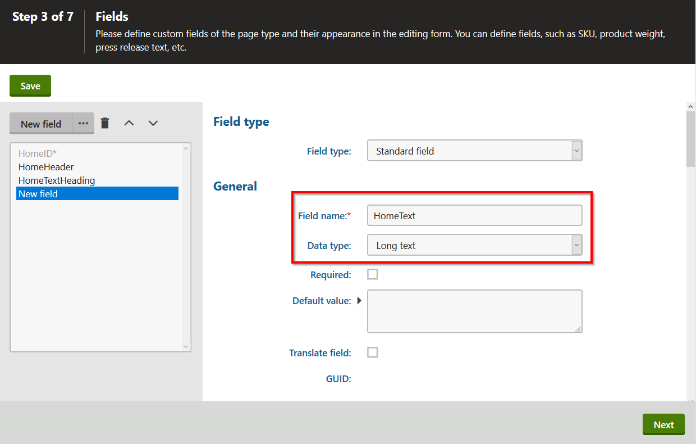
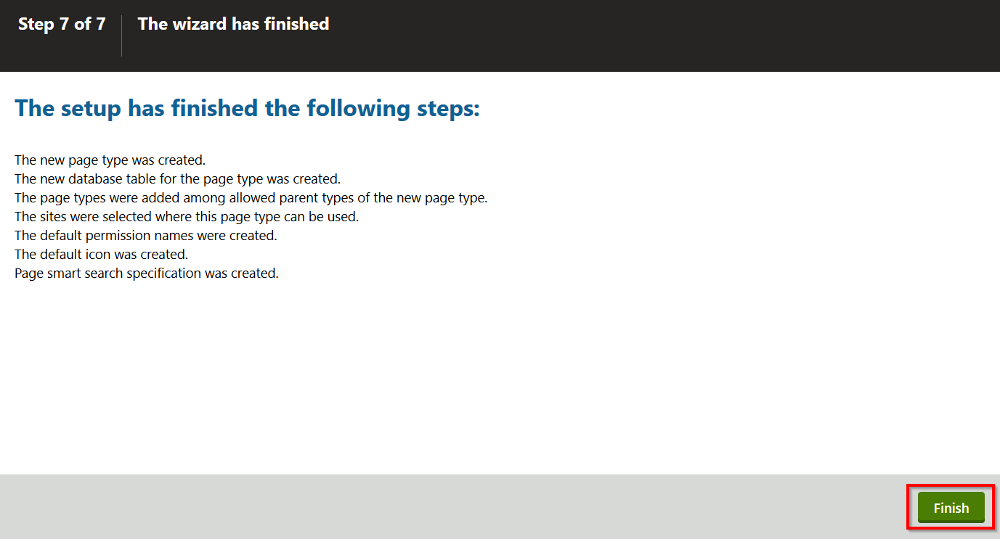

Creating content only page types
This page is a part of a tutorial, which you should follow sequentially, from the beginning to the end. Go to the first page: Getting started with Kentico.
You will learn about:
In step 1 and step 2 of this tutorial, you have set up your environment for MVC development. Let's start building your tutorial website.
The website will have two pages and a simple navigation menu. The Home page will have a header, a text heading, and the text itself. The Medical center page will have a header text field and a content field that can be formatted using HTML. To allow content editors full control over the menu, you will create a menu item page type with a page selector and another page type representing a content tree section that will separate the menu items from the rest of the pages. The menu item page type will allow editors to hand-pick pages that will display in the website's navigation.
In this tutorial step, you will create page types for the dynamic menu and the pages that will store the content of the MVC site.
Content only page types in Kentico MVC
Content only page types are the most suitable page type for the development of an MVC site. They use fields to define a reusable structure of the page, and content editors use these fields to edit content on their website. Each page type has a separate database table storing the values of the defined fields, and also uses two general tables to store additional page information.
Content only pages are not based on traditional page templates. Their content, e.g., text, HTML hyperlinks, images, etc., is stored and edited via the Kentico administration interface, but the presentation of the content is handled by corresponding MVC views. To help your website editors navigate around their content, you can create a hierarchical structure on the Kentico site. This structure will be just a visual representation, because content only pages do not define actual pages on the live site.
How is the data stored?
For example, your Home page type for the tutorial website will have three fields. The first two Text fields will hold the page header and the heading, and the third field will be a Text area. Any page based on this new page type will have its content stored in the MEDIO_Home database table. Additional data, such as general page properties, is stored in the CMS_Document table, and data related to the page's position in the content tree hierarchy is stored in the CMS_Tree table.
Creating the page type for the Home page
In the Page types application, click the New page type button to start the wizard.
In Step 1 of the wizard, fill in the following values:
Page type display name: Home (MEDIO Clinic)
Namespace: MEDIO
Name: Home
Click Next.
In Step 2, make sure the Content only page type option is selected, and leave the other values as they are.
Click Next.
In Step 3, click the New field button to create a field for the page header.
Fill in the following values:
Field name: HomeHeader
Data type: Text
Size: 1000
Field caption: Header
Form control: Text area
Click Save.
Click the New field button to create the second field for the page heading with the following values:
Field name: HomeTextHeading
Data type: Text
Size: 200
Field caption: Text heading
Form control: Text box
Click Save.
Create the third field for the page text with the following values:
Field name: HomeText
Data type: Long text
Field caption: Text
Form control: Text area

Click Save.
Click Next.
In Step 4, do not change anything, and click Next.
In Step 5, click Next.
In Step 6, click Next.
In Step 7, click Finish to complete the new page type wizard.

Setting the page type's URL pattern
Content only pages just store data, and the presentation of actual web pages is handled by the MVC application. As a result, the Kentico administration application does not automatically know the live URLs under which individual pages will be available.
You can add this information into the system by setting a URL pattern for your content only page types.
Features that use the URL pattern
By setting the correct URL pattern for your page types, you allow content editors to do the following:
Preview content in the Pages application, and use the Live site button in the application list to open the appropriate page on the MVC site
Add page links into the content of rich text fields using the system's WYSIWYG editor
Additionally, the sample implementation of the navigation menu in this tutorial will use the URL pattern values to generate page links.
In the Page types application, make sure you are on the General tab of your Home (MEDIO clinic) page type.
Type the following value into the URL pattern field: /Home
Click Save.
There will only be a single Home page of the Home (MEDIO clinic) type, so a static /Home URL pattern is sufficient. On more complex sites, you may need to add macro variables into the pattern to generate URLs dynamically (e.g. for identifiers when using the same page type for multiple pages, or for different language versions of the same page). The system combines the URL pattern with the site's presentation URL, so the final live URL of the Home page will be: http://localhost/MedioMVC/Home
Preparing the page type's wrapper classes
Before you start adding new pages and their content, let's make sure you'll be able to work with this page type in your MVC application. Kentico allows you to generate code for your page type directly from the user interface.
To generate code for the Home (MEDIO Clinic) page type, switch to the Code tab.
Verify the Save path (by default, the path is set to ~/App_Code/CMSClasses), and click Save code.
If you have installed Kentico as a web application, your default path to save classes will be set to ~/Old_App_Code/CMSClasses.
The code generator creates two wrapper classes, Home and HomeProvider. The Home class contains properties matching the page type fields you have defined, and the provider allows developers to work with pages of the given type in the MVC site's code.
Later in the tutorial, you will use these two classes to retrieve and display content on the website. But first, let's create all page types you will need to build your tutorial website.
Creating the page type for the Medical center page
In the Page types application, click the New page type button to start the wizard.
In Step 1 of the wizard, fill in the following values:
Page type display name: Medical center (MEDIO Clinic)
Namespace: MEDIO
Name: MedicalCenter
In Step 2, make sure the Content only page type option is selected.
In Step 3, create two fields with following values:
The field for the Medical center header
Field name: MedicalCenterHeader
Data type: Text
Size: 200
Field caption: Header
The field for the Medical center text
Field name: MedicalCenterText
Data type: Long text
Field caption: Text
Form control: Rich text editor
Finish the page type wizard.
On the General tab of the Medical center (MEDIO Clinic) page type, enter /MedicalCenter into the URL pattern field.
Click Save.
Switch to the Code tab.
Verify that the Save path is set to ~/App_Code/CMSClasses and save the code of the page type.
You have created the page types for your pages. Now, let's create the page types you will use to build the navigation menu.